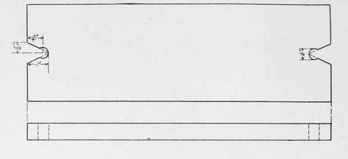
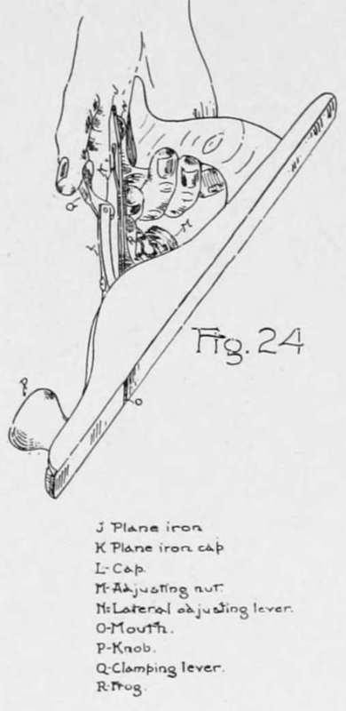
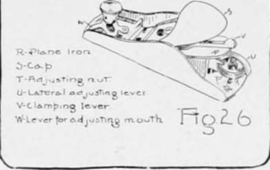
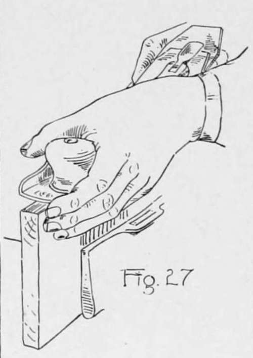
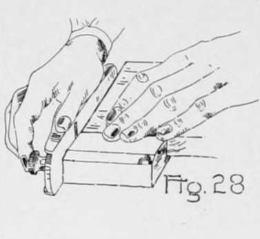

Chapter III. Planing
Description
This section is from the book "Beginning Woodwork At Home And In School", by Clinton Sheldon Van Deusen. Also available from Amazon: Beginning Woodwork At Home And In School.
Chapter III. Planing
On completing this chapter one should have acquired a free motion when using the jack and block planes; should have become skilled in taking off a shaving where desired; and should have an appreciation of the accuracy possible when using the plane.
Swing Board
The material required is a piece of rough pine 15"x5"x7/8".
The tools to be used for the first time are the jack-plane and the block-plane. The jack-plane is about 13" long, the several parts of which are shown clearly in Fig. 24.* The double plane-iron (Fig. 25) may be moved in or out of the mouth by turning the adjusting nut (M Fig. 24) thus regulating the thickness of the shaving that the plane will cut, and by moving the lever (N Fig. 24) that is close under the plane-iron, to the right or left the sharpened end of the plane-iron may be made to project an equal distance out of each end of the mouth (O Fig. 24). When planes are not in use they should be laid on their side or placed in some other position where the sharpened end of the plane-iron cannot come in contact with anything, not even the surface of the bench.
Swing Board.
* The planes shown in Figs. 124 and 26 have been standards for some years but other good planes are now on the market and if purchased by a beginner he should learn the method of adjustment when purchasing. A portion of the appendix is devoted to a further description of these planes, and an explanation of how to take them apart and put them together is given. If your plane is in good condition it is not advisable to read these explanations until after the work of this chapter is completed.
The block-plane, the parts of which are shown in Fig. 26 is about 6" long and is made especially for planing across the end of the wood. The adjusting nut (T Fig. 26) is placed in a different position but changes the thickness of the shaving the same as the adjusting nut in the jack-plane. The lateral adjusting lever (U Fig. 26) serves the same purpose as the one on the jack-plane.
(a) Raise the bench-stop or stops to about half the thickness of the piece for the swing board and place the piece lengthwise of the bench with a broad surface up and one end resting against the bench-stop.
(b) Stand in an erect position with the left foot a little in advance of the right, and with the right side of the body a little back of the right end of the piece (Fig. 1). With the jack-plane set for rather a light cut, place it on the right end of the piece, holding the handle with the right hand and with the left hand resting on the knob at the front end of the plane. Now push the plane forward without much movement of the body; that is, let the arms swing from the shoulders. A downward pressure should be exerted on the knob when beginning the stroke, and when finishing the stroke a downward pressure should be exerted on the handle. In bringing the plane back to begin another stroke raise the plane sufficiently to prevent its drawing the piece back.
(c) Strokes similiar to those described in b should be continued until the surface appears smooth. It may be desirable some of the time to plane only part of the length of the piece, and that should be done in one of the following ways: if it is desired to plane from near the middle of the piece to the farther end, the plane may be placed on the board where desired and pushed to the end, as the starting of the shaving will be gradual and no disfiguring mark will be left. If, however, it is desired to stop the cut of the plane before reaching the farther end, it is necessary to gradually reduce the thickness of the shaving as it comes to the end of the cut by raising the back end of the plane from the board while the plane is in motion.
(d) When this entire surface appears smooth, mark a light slanting line across it to designate it as the working face.
(e) Clamp the piece in the vise with one of the narrow sides up and hold the plane in a manner similar to that explained in b, except that the fingers of the left hand should be allowed to extend down by the left side of the plane and piece (Fig. 27). When the side is nearly smooth, try the effect of planing with the center line of the plane over the edge formed by this side and the working face, still keeping the plane in a horizontal position. Examine the shaving cut when the plane was so held, and it will be found that the shaving is thicker on that side. A similar result will be noticed when the center line of the plane is over the other edge. This knowledge will be of use later when you wish to plane more off of one part of a narrow surface than another, to bring it square with a broad surface.
(f) When this side appears smooth, mark two light slanting lines across it to designate it as the joint side.
(g) Plane the other narrow side in a similar manner until it appears smooth.
(h) In order that you may appreciate how thin a cut may be made with the plane, proceed as follows: Set the plane so as to cut as thin a shaving as can easily be cut the full width of this narrow side; set the gage at ,V and with the gage-block against this narrow side gage the length of the working face; then count the number of full-length cuts of the plane on this narrow surface necessary to take off that It may be found that it has required as many as twenty-five cuts to do this, which would mean that each shaving was 1/400" or less in thickness.
(i) Plane the other broad surface as in b and c until it appears smooth.
Continue to: